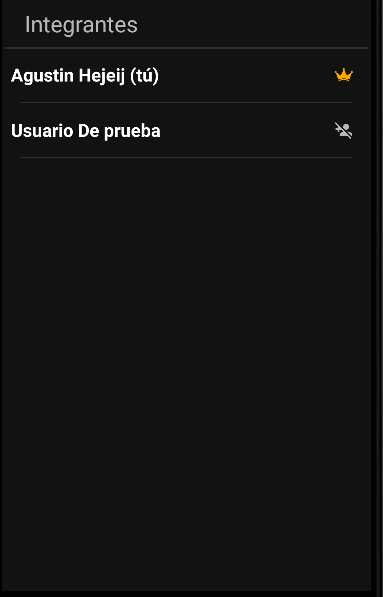
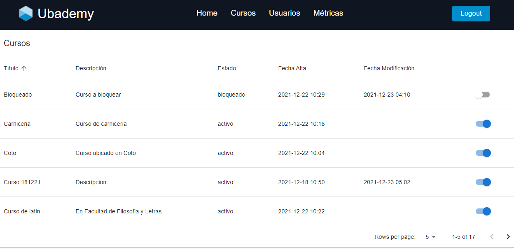

Pantalla de login

Formulario de registro

Una vez que se abra la aplicación por primera vez, se presentará la pantalla de Registro y Login. Allí, presionar el botón de registro
Una vez cliqueado el botón, se le redireccionará a la pantalla de registro de usuario, en el que deberá llenar todos los campos que se le piden. Una vez completado el formulario, en caso de no haber errores, volverá a la pantalla de Login.
Pantalla de login
Formulario de registro
Ahora con las credenciales que eligió al registrarse, puede ingresar a las funcionalidades de la aplicación. En caso de que el mail registrado sea de Google, puede cliquear el icono de google para ingresar usando su cuenta de google directamente.
Una vez logueado, será direccionado al Home de la aplicación. Aquí podrá ver diferentes listados de cursos, entre ellos uno de Recomendados, Mis Inscripciones, Mis Cursos (cursos creado por el usuario logueado), Cursos en los que soy colaborador, etc.
Pantalla de login
Login con google

Home de la aplicación

Para crear un curso, cliquear las 3 barritas de arriba a la izquierda y luego el botón de crear curso.
Se le redireccionará al formulario de creación de curso, en el que deberá ingresar toda la información que se le muestre en pantalla. Una vez ingresada toda la información, cliquear el botón de Crear.
Se dará la opción de subir imagenes y videos para que aquellos usuarios que pertenezcan al curso puedan visualizar. Para subir una imagen o un video, cliquear en el botón de subir archivo, y podrá elegir los archivos que desee subir. Luego podrá visualizar un listado con los archivos subidos, y puede borrarlos cliqueando el botón rojo a la derecha del nombre del archivo.
Una vez elegido todos los archivos, cliquear el botón de siguiente para finalizar la creación del curso.
Acceso al perfil

Visualizando perfil propio

Editando perfil
En la pantalla de Home es posible filtrar los diferentes listados según texto de los títulos de los cursos creados, tipo de suscripción, o temática del curso. Se puede filtrar cliqueando la flecha presente arriba a la izquiera, al lado del text box de busca un curso. Se desplegará una lista de acciones, y para realizar una búsqueda que cumpla con todos los parámetros se debe cliquear el botón de Buscar

En la pantalla de Home, al cliquear un curso se podrá ver el detalle del mismo. Se le direccionará a una pantalla que contiene dicha información, y se podrán visualizar los botones de Añadir como favorito, y en caso de que se cuente con una suscripción válida, un botón para inscribirse al curso. Si usted es el creador del curso, entonces podrá visualizar los botones que le permiten editar la información del curso (nombre, título y archivos). Al inscribirse al curso, podrá acceder a toda la información del mismo.
Si no es el creador del curso y no está inscripto y tiene una suscripción válida verá lo siguiente.

Si no cuenta con una suscripción válida para el curso verá lo siguiente.
Una vez que se suscriba verá lo siguiente.
En caso de ser el creador del curso verá lo siguiente.

En caso de ser dueño del curso, podrá modificar la información del curso cliqueando el botón de editar curso. Podrá modificar el título y descripción del curso, como tambien los arhivos que se pueden visualizar (siguiendo los mismos pasos descriptos en Subir Imágnes). Para aplicar los cambios cliquear el botón de Aplicar Cambios.

En la pantalla de visualización de curso, si cliquea el botón de Ver imágenes se le redireccionará a un listado de archivos del curso, y allí podrá cliquear cualquier item para visualizar su contenido.
Listado de archivos.

Visualización de archivo.

En la pantalla de visualización de curso, si cliquea el botón de Exámenes siendo creador, se le redirigirá a una pantalla en la que se podrán visualizar, crear y editar exámenes (esto último en caso de que no esté publicado). Cliquear el + de abajo a la derecha y luego crear examen y será dirigido a un formulario de creación de exámen. Allí debe darle un título al exámen, y podrá agregar tantas consignas como se quiera (cliqueando el botón de nueva consigna) y asignarle un puntaje a cada una. La suma de los puntajes debe dar 10. Al completar el form correctamente, cliquear en Crear. Ahora podrá ver el nuevo exámen en el listado como bloqueado (simbolizado por el candado), y para publicarlo debe cliquear el candado de la derecha del nombre y acceder a la publicación del pop up que se desplegará.
Creación de exámen
Form de creación de exámen
Exámen creado

Exámen creado

Exámen publicado

En la pantalla de visualización de curso, si cliquea el botón de Exámenes siendo creador, se le redirigirá a una pantalla en la que se podrán visualizar, crear y editar exámenes (esto último en caso de que no esté publicado). Si el exámen no está publicado, cliquear el + de abajo a la derecha y luego editar examen y será dirigido a un formulario igual al de creación de exámen, en el que se le permitirá editar las consignas y títulos del exámen. La suma de los puntajes de las consignas debe seguir siendo 10. Al finalizar, cliquear el botón de editar. En caso de que el exámen se encuentre ya publicado, se le informará el error.
Editar exámen
Form de edición de exámen
En la pantalla de visualización de curso, si cliquea el botón de Exámenes siendo alumno, se le redirigirá a una pantalla en la que se podrán visualizar y completar los exámenes publicados. Para resolver un exámen, simplemente cliquear el que se quiera resolver del listado y se le redirigirá al exámen con sus preguntas y podrá responderlas.
Visualización de exámenes publicados
Resolución de exámen

Luego, cliquee en la consigna que desee resolver y se le dirigirá a una pantalla en la que podrá responder la consigna. Para pasar a la siguiente consigna haga click en Siguiente. Una vez que llegue a la última consigna y cliquee Finalizar, volverá al form del exámen, y allí deberá cliquear Enviar Exámen para finalizar la resolución.
Resolución de consigna
Exámen enviado
Consigna resuelta luego de enviar

Luego de enviado, el dueño del curso o sus colaboradores deberán corregirlo. Una vez corregido, vuelva a ingresar al exámen y verá sus correcciones generales, y tambien puede ver el detalle de la corrección de cada consigna cliqueando la que desee ver en detalle.
Exámen corregido
Consigna corregida
En la pantalla de visualización de curso, si cliquea el botón de Exámenes siendo dueño o colaborador del curso, se le redirigirá a una pantalla en la que se podrán corregir los exámenes publicados. Para corregir un exámen, debe cliquear un exámen del listado y luego elegir al alumno que se quiera corregir.
Visualización de alumnos que resolvieron el exámen
Luego, cliquee al alumno que quiera corregir, y podrá ver las respuestas del alumno. Al seleccionar una respuesta, se le dará la opción de elegir si está bien (suma el 100% de los puntos que vale la consigna) o mal (no suma). Se deben corregir todas las preguntas antes de cliquear enviar corrección.
Corrección de exámen

Corrección de consigna

Consigna corregida
En la pantalla de visualización de curso, si cliquea el botón de Ver Alumnos, se lo redirigirá a un listado de usuarios que pertenecen al curso. Se señalará con una coronita a la derecha del mail al usuario dueño del curso. Además, si cliquea en cualquiera de los usuarios se lo redirigirá a una pantalla en la que podrá visualizar más información del usuario en cuestión. Si es dueño del curso, podrá agregar a algun usuario inscripto al curso como colaborador cliqueando el boton de la derecha del nombre.
Listado de usuarios

Listado de usuarios siendo el dueño
Detalles de usuario
En la pantalla de Home, si cliquea las tres barritas de arriba a la izquierda y luego en el botón de perfil, será redireccionado a una pantalla en la que podrá ver sus datos y también editarlos. Para editar la información, cliquear el botón de editar perfil para redirigirse al formulario de edición de perfil. Allí podrá actualizar su nombre y apellido, como también su ubicación. Para confirmar los cambios, cliquear en aplicar cambios.
Acceso al perfil
Visualizando perfil propio

Editando perfil

En la pantalla de Home, si cliquea las tres barritas de arriba a la izquierda y luego en el botón de Mensajes privados se le redireccionará a una pantalla en la que podrá intercambiar mensajes en tiempo real con otro usuario de la plataforma. En el listado bajo la pestaña de chats, verá las personas con las que tiene un chat activo, mientras que en la pestaña usuarios puede elegir un usuario cualquiera con el que comenzar un intercambio de mensajes. Una vez que cliquee sobre un usuario se le abrirá el cha, en el que podrá escribir mensajes y luego enviarlos usando la flecha celeste de abajo a la derecha. Además al recibir un mensaje, también recibirá una notificación.
Acceso a la sección de mensajes
Visualizando chats activos
Visualizando usuarios disponibles

Chateando

Recibiendo mensaje

En la pantalla de Home, si cliquea las tres barritas de arriba a la izquierda y luego en el botón de Suscribirse se le redireccionará a una pantalla en la que podrá mejorar su suscripción actual a una mejor, y se debe realizar un pago para mejorar la suscripción.
Acceso a la sección de suscripción
Modificando y pagando la suscripción.

Una vez que se abra la web por primera vez, se presentará la pantalla de Login. Allí, ingresar los datos que correspondan y apretar el botón de login
Pantalla de login
Hay distintos tipos de errores al intentar loguearse, usuario inexistente, contraseña invalida y que estés bloqueado por un administrador pero por seguridad lo que se buscó es que siempre salga el mismo mensaje de error que es el siguiente:
Error de logueo
Una vez logueado, será direccionado al Home de la web. Aquí podrá ver la pantalla principal del back office con boton para desloguearse y las pestañas
para acceder a los cursos y usuarios (y eventualmente volver a home).
Pantalla de home
Al hacer click en la pestaña "Cursos", podremos visualizar todos los cursos cargados con sus diferentes atributos en una lista de 5 cursos por página
Pantalla de cursos
Al hacer click en la pestaña "Usuarios", podremos visualizar todos los usuarios cargados con sus diferentes atributos en una lista de 5 usuarios por página
Pantalla de usuarios
El botón que aparece junto a cada curso y usuario nos sirve para bloquear el mismo, solo basta con hacerle click y el curso o usuario quedará bloqueado.
Se puede comprobar que esta bloqueado o no segun si está o no deshabilitado el switch. Si esta habilitado quiere decir que el curso/usuario está activo, si está deshabilitado quiere decir que estaba bloqueado y sino sale nada quiere decir que es un curso/usuario eliminado.
Activo

Bloqueado
Para añadir un nuevo administrador al back office solo hace falta apretar el botón "Nuevo Administrador" en la pestaña de "Usuarios".
Botón para añadir nuevo administrador
Al hacer esto se deberán llenar los campos del nuevo administrador para cargarlo.
Pantalla para agregar administrador

En este apartado se visulizaran ciertos graficos y analisis de eventos que suceden en la aplicación. Estos eventos pueden ser usuarios creados, usuarios bloqueados, login de usuarios con y sin google, además estos eventos pueden ser diarios o por hora, también se incluirán otros valores que no tienen porque ser estos eventos mencionados.
Esta parte del dashboard se busca dar un resumen que es visualmente facil de ver
Cards del Dashboard
Busca mostrar la cantidad de eventos que sucedieron por mes durante todo el año actual.
Eventos del año
Busca mostrar cuantas suscripciones hay en total de cada tipo.
Suscripciones
Busca mostrar la ocurrencia por hora de cada evento que ocurre durante el día actual.
Eventos del día por hora
Busca mostrar la cantidad total de cada evento que ocurre durante el día actual.
Eventos del día